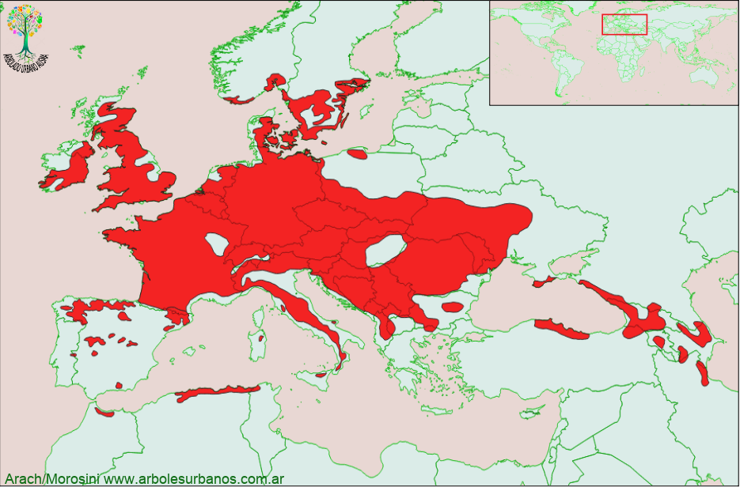

Click en las imágenes para ampliar

{kind=link}
{kind=link}
{kind=link}
{kind=link}
{kind=link}
- NOMBRE CIENTÍFICO
- Prunus avium
- FAMILIA BOTÁNICA
- Rosáceas
- ORIGEN
- No se conoce a ciencia cierta cual es su área de origen, dado que desde hace mucos años que esta especie fue domesticada por el hombre, pero sin lugar a dudas es originario del centro este de Europa y Asia menor
- DESCRIPCIÓN GENERAL
- Este árbol caducifolio puede alcanzar hasta 20 metros de altura y diámetros superiores a los 50 cm, formando una copa globosa. Tiene una atractiva corteza juvenil brillante de color marrón rojizo, con lenticelas oscuras y alargadas, cuando envejece la corteza es oscura y agrietada en placas. Sus hojas son alternas, simples de forma ovado oblongas, con borde irregularmente aserrado. De color verde claro con envés algo pubescente, en el otoño adquieren tonalidades entre naranja y rojo, antes de caer.
- FLORES
- Florece a fines del invierno, antes que aparezcan las hojas nuevas. Son de color blanco, de 6 pétalo, agrupadas en grupos umbeliformes, con largos pedúnculos.
- FRUTOS
- Su fruto madura a mediados del verano, es una drupa de color rojo negruzco, carnosos y esféricos de 1 cm de diámetro, son de sabor dulce, a veces algo ácido dependiendo de la variedad.
- REPRODUCCIÓN
- Se reproduce por semilla, aunque las variedades se las multiplica por injertos.
- USOS
- Posee múltiples usos en la producción de frutas, que se consumen frescas o como dulces, elaboración del licor conocido como Kirch. Su madera es de buena calidad moderadamente pesada y dura, se la utiliza en carpintería y tornería. También es utilizado en jardinería por su profusa floración, lo decorativo de sus frutos y los tonos de su follaje otoñal, se lo planta como ejemplar aislado o formando pequeños grupos.
- PARTICULARIDADES
- Existen más de 100 variedades y cultívares distintos de cerezo, muchos son híbridos entre esta especie y otras especies originarias del oriente de Asia (principalmente Japón Corea y China. Algunos de ellos tienen fines mejores frutos y otros solamente fines estéticos (ejemplares de flores dobles, de pequeño tamaño, copas densas, etc).
Es muy fácil de confundir con el guindo que es de menor tamaño generalmente y cuyos frutos son más pequeños y de sabor ácido.